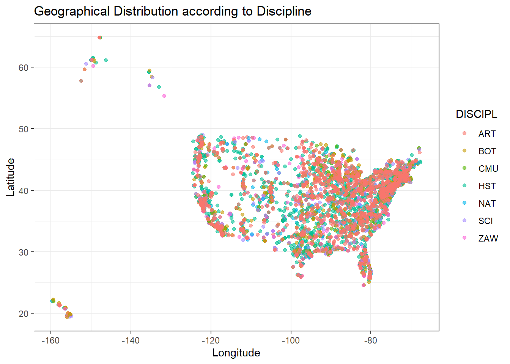
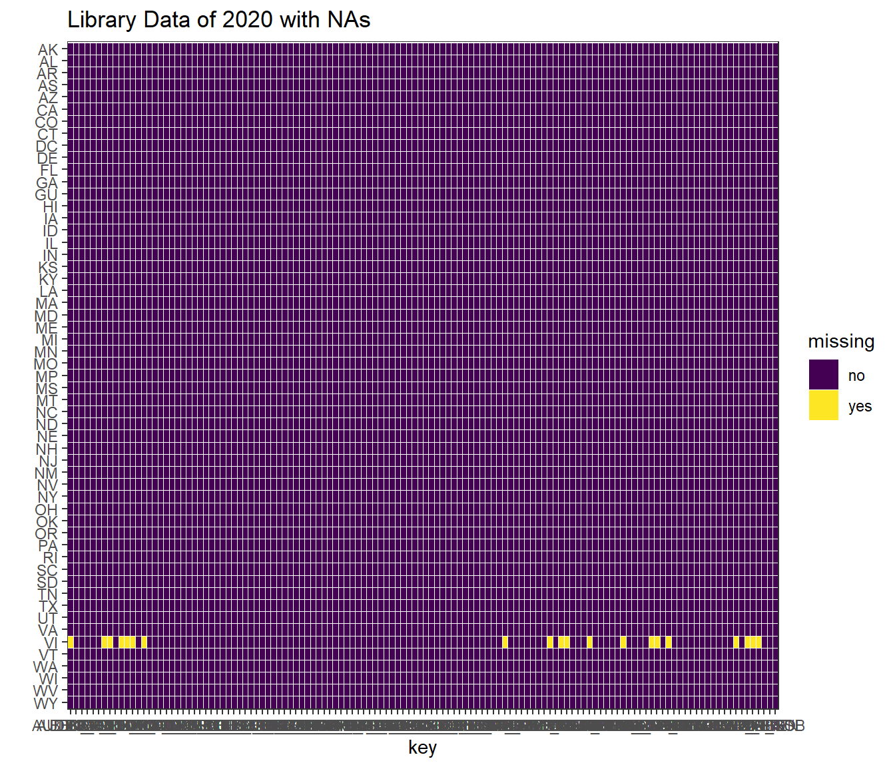
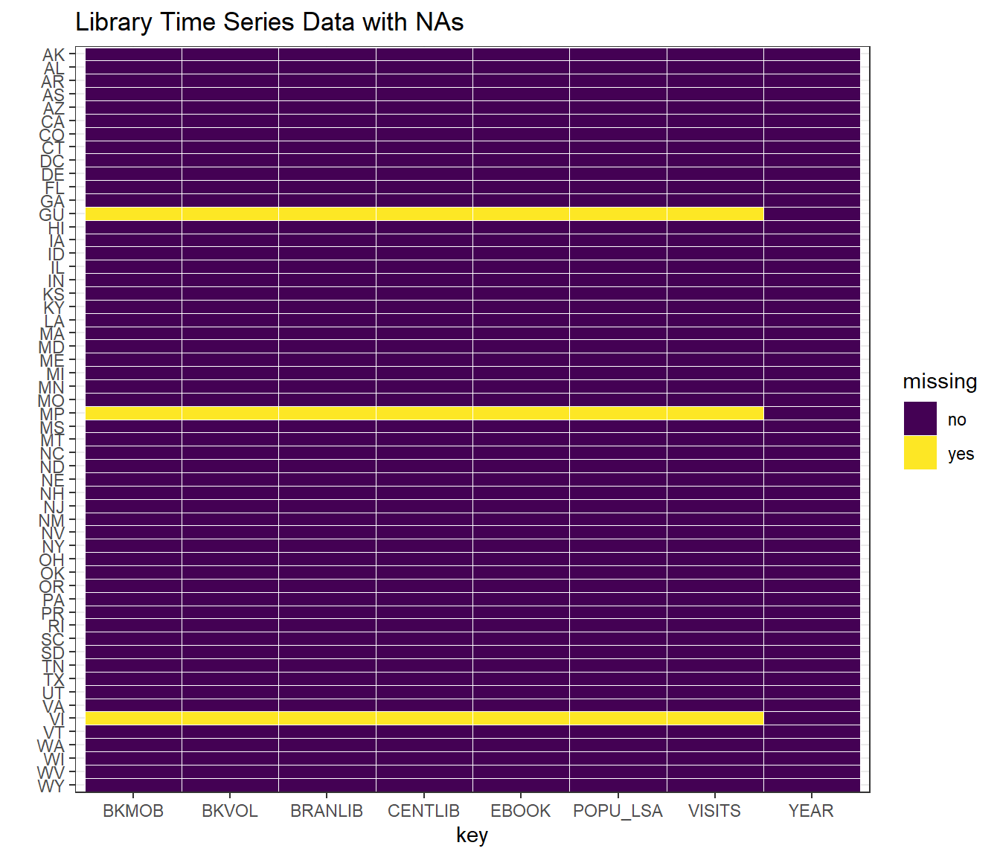

Chapter 3 Data
3.1 Sources
3.1.1 Museum Data Source
The Museum data is from the official website of the Institute of Museum and Library Services(IMLS), and we use the latest version that collected in 2018. There are three csv files that contain different type of museums. The second file just contains GMU museums, the third file just contains HSC museums.
The three files contain 7431, 7961, 14786 museums, and each file has 58 variables, including some basic information, like the id, location, contact, ruledate information, and the income and revenue information.
And we choose to mainly analyse the state, discipline, income and the established dates, therefore, we select the relevant columns to conduct our analysis. The discipline contains 9 values, reflecting 9 kinds of museums; we choose IncomeCD15 to present museum income, which 9 ranges of income from 0 to 50,000,000 and greater; rule_date the registered nonprofit organization was recognized as having obtained their formal tax-exempt status by the IRS, we use this column to present the established date.
3.1.2 Library Data Source
The library data set is also from https://www.imls.gov/ which is the website of the Institute of Museum and Library Service. This institute provide several data set regarding museum and library across the nation. We use the data set of The Public Libraries Survey (PLS) which supplied annually by public libraries across the country on when, where, and how library services are changing to meet the needs of the public.
The data was collected by the institute. The survey is administered by Data Coordinators and the requested data was collected from local public libraries. There is a web-based reporting system State Data Coordinators used report data to the institute.
The survey was conducted annually since 1988 and the website provides data files since 1992. During past years, the content on the survey changed 3 times and the format of the data sets are slightly differences.
As for the data file, the data files are available on the web site and is a public-used data set which means some of the data was removed aimed to protect the confidentiality of individually identifiable survey respondents. Our project use this public-used data set which was encoded and pre-processed and provides a documentation file to help the user correctly understand the data set and gives detailed information about the data set.
The data set provides statistics on the status of public libraries in the United States collected from approximately 9,000 public libraries with approximately 17,000 individual public library outlets in the 50 states, the District of Columbia, and outlying territories. The data set contains information about library visits, circulation, size of collections, public service hours, staffing, electronic resources, operating revenues and expenditures and number of service outlets. We basically use the state wide data which contains 55 rows and more than 100 variables.
3.2 Cleaning / transformation
3.2.1 Museum Data Cleaning
We firstly select the columns that we need from three files and then modify the data type of ID from string to numeric to match each other and then merge them together.
Then we created different data frames group by state, discipline, income, and decades of the rule date to further show the distribution of museums in different disciplines and states, the relationships between variables, and the museum growth trends from 1900s to 2010s.
3.2.2 Library Data Cleaning
The data format in the library data set is quite clean and suitable for us to use. Thus, we didn’t do much on cleaning them but only went through the variables in the data set and select the variables that we are interested in. The state data in the data set is coded. As a result, we used another data set which contains the name of state and the code of state and combine them to get the state name we need.
3.3 Missing value analysis
3.3.1 Museum Data
## MID DISCIPLINE ADSTATE INCOMECD15 RULEDATE15
## 3 0 0 8677 8682There is no missing data in discipline and state, but are 8677(28.8%) empty value in incomecd, and 8682(28.8%) empty value in rule date. Most missing cases are missing rule date and incomecd together, which means missing these two variables are correlated. If MID is missing, we think it is not a valid museum record, and will delete this record.
We can see that after removing missing data, the rest of data is still representative since we can restore the shape of the map of the USA by plotting the rest of the data according to each pair of the location variable. This means that data collection covers each state and the amount of missing data is reasonable because the rest of data keeps the key geographic and discipline information. Hence, it’s valid to explore the distribution of disciplines and locations in the following sections by using the rest of data.

3.3.2 Library Data
We first visualize the missing data in our data set and discuss the pattern it has. This is an important step for us to under stand our data.
3.3.2.1 Library Data Set
- Library data of 2020 In this project, we first analyze the data of Library in US in 2020. According to the document of the data set, all the missing data is filled with ‘-1’. Thus, we will visualize the distribution of ‘-1’ in this data set.

As we can see from the graph, the only row has missing data is the state with code ‘VI’ which is Virgin Islands. All other data is completed. As this state is an outlying area of the United States and missing data are primarily some statistic data about the revenue and resource data of the library, we believe it is reasonable to keep the data as ‘-1’ in these rows which have little effect on our visualization.
This graph shows the pattern further which is most rows (data of different state) is complete and provide us a relatively good data quality to analyze and visualize the libraries in US.
3.3.2.2 Time series missing data analysis
Moreover, to discuss the changing pattern of libraries in US, we collect library data in different years. Although we can easily read in all the raw data, band them together and select the variables we are interested in, we believe that to store such a large set of data makes the requirement of space of this project too big and the transforming progress takes a lot of time. As a result, we choose the variable in each years’ data and store them in a csv file. As the data update once a year, it will not take too much time to add new data to this file. As for the data format, we keep it same with the original data and all the missing data is filled with ‘-1’.

As we can see from the graph, there are three states having missing data through the years which are GU(Guam), MP(Northern Mariana Islands) and VI(Virgin Islands). All of these states are outlying area of the United States. Thus, we keep these data with its original form.

As we can see in this chart, among all the rows having missing data, some of them missing quite a lot of data while others only miss one or two data. As we result, we would like to further see the missing data. We select all the rows of the three states and data is as below:
## STABR YEAR POPU_LSA CENTLIB BRANLIB BKMOB BKVOL EBOOK VISITS
## 1 GU 2020 168678 1 5 0 286930 0 35115
## 2 MP 2020 53883 1 2 1 83624 5500 44710
## 3 VI 2020 106405 0 5 3 176762 -1 -1
## 4 GU 2019 168678 1 5 0 278963 0 100095
## 5 MP 2019 51433 1 2 1 82199 5000 147983
## 6 VI 2019 106405 0 5 3 176762 -1 -1
## 7 GU 2018 167358 1 5 0 276631 0 75119
## 8 MP 2018 51994 1 2 1 92000 5000 126778
## 9 VI 2018 106405 0 4 3 -1 -1 -1
## 10 GU 2017 164229 1 5 0 272720 200 81572
## 11 MP 2017 53883 1 2 0 92141 5000 104224
## 12 GU 2016 159358 1 5 0 269270 200 71813
## 13 GU 2015 159358 1 5 0 266695 200 72223
## 14 GU 2014 159358 1 5 0 263486 1335 103593
## 15 MP 2014 53883 1 1 0 -1 -1 -1
## 16 VI 2014 106405 0 5 1 -1 -1 -1
## 17 GU 2013 159358 1 5 1 260586 0 98969
## 18 MP 2013 53883 1 1 0 -1 -1 -1
## 19 VI 2013 106405 0 5 1 -1 -1 -1
## 20 GU 2012 159358 1 5 1 258241 1278 75472
## 21 MP 2012 53883 1 1 0 -1 -1 -1
## 22 VI 2012 106405 0 5 1 -1 -1 -1
## 23 GU 2011 159358 1 5 1 255277 0 80016
## 24 MP 2011 53883 1 1 0 -1 -1 -1
## 25 VI 2011 106405 0 5 1 -1 -1 -1
## 26 GU 2010 180692 1 5 1 204503 0 84019
## 27 MP 2010 53883 1 1 0 -1 -1 -1
## 28 VI 2010 106405 0 5 1 -1 -1 -1
## 29 GU 2009 175459 1 5 1 210079 0 60763
## 30 MP 2009 -1 -1 -1 -1 -1 -1 -1
## 31 VI 2009 -1 -1 -1 -1 -1 -1 -1
## 32 GU 2008 25984 1 5 1 211772 -1 70061
## 33 MP 2008 -1 -1 -1 -1 -1 -1 -1
## 34 VI 2008 -1 -1 -1 -1 -1 -1 -1
## 35 GU 2007 -1 -1 -1 -1 -1 -1 -1
## 36 MP 2007 -1 -1 -1 -1 -1 -1 -1
## 37 VI 2007 -1 -1 -1 -1 -1 -1 -1
## 38 GU 2006 -1 -1 -1 -1 -1 -1 -1
## 39 MP 2006 -1 -1 -1 -1 -1 -1 -1
## 40 VI 2006 -1 -1 -1 -1 -1 -1 -1From the table, we can see that in some year(2016,2015), two of the states didn’t report the data and among all the reported data, most of the missing data is in early years. As we would like to see the trend of the data, we also keep the original data in this data set in stead of filling them in some way.